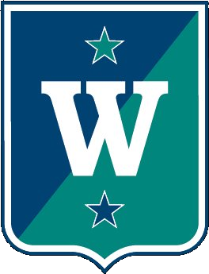

Toppidrett Golf · Fredrikstad
44 uker · uke 34 (17. aug 2026) – uke 24 (20. jun 2027) · VG1 / VG2 / VG3 samlet · golf ma/on/fr 08:00–10:00 (GFGK)
| Uke | Dato (ma–sø) | Periode | Uketype | Inne/Ute | Turnering | Notat |
|---|---|---|---|---|---|---|
| 34 | 17.–23. aug. | TURN | Pre-turnering | Ute | (fylles inn) | Sesongform — siste sommerturneringer |
| 35 | 24.–30. aug. | TURN | Testuke | Ute | — | NGF/Team Norway testperiode (aug/sep) — se wang-tester |
| 36 | 31. aug. – 6. sep. | TURN | Testuke | Ute | — | NGF/Team Norway testperiode (aug/sep) — se wang-tester |
| 37 | 7.–13. sep. | TURN | Turneringsuke | Ute | (fylles inn) | Sommersesong pågår |
| 38 | 14.–20. sep. | TURN | Turneringsuke | Ute | (fylles inn) | Sommersesong pågår |
| 39 | 21.–27. sep. | TURN | Turneringsuke | Ute | (fylles inn) | Sommersesong pågår |
| 40 | 28. sep. – 4. okt. | TURN | Ferieuke | Ute | — | Høstferie (Østfold uke 40) |
| 41 | 5.–11. okt. | TURN | Turneringsuke | Ute | (fylles inn) | Sommersesong pågår |
| 42 | 12.–18. okt. | TURN | Avslutningsuke | Ute | — | TURN → test/GRUNN. Bane stenger ~ut okt |
| 43 | 19.–25. okt. | TURN | Testuke | Ute | — | Test-/evalueringsuke — IUP-baseline (wang-tester) |
| 44 | 26. okt. – 1. nov. | GRUNN | Utviklingsuke | Inne | — | GRUNN start — ny teknikk (BUILD) |
| 45 | 2.–8. nov. | GRUNN | Utviklingsuke | Inne | — | Full teknisk trening (GRUNN) |
| 46 | 9.–15. nov. | GRUNN | Utviklingsuke | Inne | — | Full teknisk trening (GRUNN) |
| 47 | 16.–22. nov. | GRUNN | Utviklingsuke | Inne | — | Full teknisk trening (GRUNN) |
| 48 | 23.–29. nov. | GRUNN | Utviklingsuke | Inne | — | Full teknisk trening (GRUNN) |
| 49 | 30. nov. – 6. des. | GRUNN | Utviklingsuke | Inne | — | Full teknisk trening (GRUNN) |
| 50 | 7.–13. des. | GRUNN | Utviklingsuke | Inne | — | Full teknisk trening (GRUNN) |
| 51 | 14.–20. des. | GRUNN | Utviklingsuke | Inne | — | Full teknisk trening (GRUNN) |
| 52 | 21.–27. des. | GRUNN | Ferieuke | Inne | — | Juleferie |
| 53 | 28. des. – 3. jan. | GRUNN | Ferieuke | Inne | — | Juleferie |
| 1 | 4.–10. jan. | GRUNN | Samlingsuke | Inne | — | WANG fellessamling m/ Oslo (7 dg) |
| 2 | 11.–17. jan. | GRUNN | Utviklingsuke | Inne | — | Full teknisk trening (GRUNN) |
| 3 | 18.–24. jan. | GRUNN | Utviklingsuke | Inne | — | Full teknisk trening (GRUNN) |
| 4 | 25.–31. jan. | GRUNN | Utviklingsuke | Inne | — | Full teknisk trening (GRUNN) |
| 5 | 1.–7. feb. | GRUNN | Utviklingsuke | Inne | — | Full teknisk trening (GRUNN) |
| 6 | 8.–14. feb. | GRUNN | Utviklingsuke | Inne | — | STAB/TEST — intern teknisk sjekk før samling |
| 7 | 15.–21. feb. | GRUNN | Samlingsuke | Inne | — | WANG fellessamling m/ Oslo (7 dg) — vinterferie uke 8 følger |
| 8 | 22.–28. feb. | GRUNN | Ferieuke | Inne | — | Vinterferie (Østfold uke 8) |
| 9 | 1.–7. mar. | GRUNN | Utviklingsuke | Inne | — | Full teknisk trening (GRUNN) |
| 10 | 8.–14. mar. | GRUNN | Avslutningsuke | Inne | — | GRUNN → SPES. Test/IUP-sjekk |
| 11 | 15.–21. mar. | SPES | Overgangsuke | Inne | — | SPES start — TEK→SLAG. Palmesøndag 21.3 |
| 12 | 22.–28. mar. | SPES | Ferieuke | Inne | — | Påskeferie (påske uke 12) |
| 13 | 29. mar. – 4. apr. | SPES | Utviklingsuke | Inne | — | Overføre teknikk til slag på bane (SPES) |
| 14 | 5.–11. apr. | SPES | Utviklingsuke | Ute | — | Overføre teknikk til slag på bane (SPES) |
| 15 | 12.–18. apr. | SPES | Utviklingsuke | Ute | — | Overføre teknikk til slag på bane (SPES) |
| 16 | 19.–25. apr. | SPES | Avslutningsuke | Ute | — | SPES → TURN. Kalibrering fullført |
| 17 | 26. apr. – 2. mai | TURN | Pre-turnering | Ute | (fylles inn) | TURN start (månedsskifte apr/mai) |
| 18 | 3.–9. mai | TURN | Turneringsuke | Ute | (fylles inn) | Kr. himmelfart to. 6. mai — fri to/fre |
| 19 | 10.–16. mai | TURN | Turneringsuke | Ute | (fylles inn) | Norgescup / Østlandstour / NM (fylles inn) |
| 20 | 17.–23. mai | TURN | Turneringsuke | Ute | (fylles inn) | 17. mai + 2. pinsedag (ma. 17.5) — fri mandag |
| 21 | 24.–30. mai | TURN | Turneringsuke | Ute | (fylles inn) | Norgescup / Østlandstour / NM (fylles inn) |
| 22 | 31. mai – 6. jun. | TURN | Turneringsuke | Ute | (fylles inn) | Norgescup / Østlandstour / NM (fylles inn) |
| 23 | 7.–13. jun. | TURN | Turneringsuke | Ute | (fylles inn) | Norgescup / Østlandstour / NM (fylles inn) |
| 24 | 14.–20. jun. | TURN | Avslutningsuke | Ute | — | Sesong-/skoleårsavslutning. IUP juni |
Periodisering (AK-fasit): TURN-rest uke 34–42 · Testuke uke 43 · GRUNN uke 44–10 · SPES uke 11–16 · TURN uke 17–24.
Inne/Ute: GFGK-banen ute ca. 5. apr – ut oktober; innendørs «Treningslokalet» (10 nett, putte 0–3 m, tutor-ballstart, 1 TrackMan til testing) resten av året.
Samlinger: WANG fellessamling med Oslo i uke 1 og uke 7 (7 dager hver) — ingen ordinære GFGK-økter, styres av WANG sentralt.
Turnering: «(fylles inn)» der turneringskalender (Srixon Tour, Garmin Norgescup, Østlandstour, NM) ennå ikke er importert.
Skolerute Østfold/Fredrikstad: høstferie uke 40, vinterferie uke 8, påske uke 12, Kr. himmelfart 6. mai, 17. mai + 2. pinsedag mandag uke 20 — bekreft mot skolens offisielle rute.